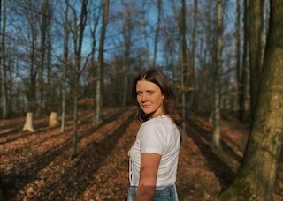

Portfolio
About
Ein paar Fakten zu mir
Ich heiße Nina König, bin 20 Jahre alt und wohne in Furtwangen aufgrund meines Studiums.
Ich studiere an der Hochschule Furtwangen, den Studiengang Online Medien.
Momentan bin ich im zweiten Semester und bis jetzt gefällt es mir sehr gut!
Meine Lieblingsveranstaltungen
- Im ersten Semster war meine Lieblingsveranstaltung Mediengestaltung!
- Im zweiten Semester ist Computergrafik und 3D-Modellierung die beste Veranstaltung (zumindest bis jetzt)!
In meiner Freizeit unternehme ich außerdem gerne was mit Freunden, mache Sport, zeichne oder lese gerne.
Hier eine Liste über die letzten Bücher, die ich gelesen habe:
- The subtle art of not giving a fuck
- Das Cafe am Rande der Welt
- Der Elefant, der das Glück vergaß
- The Big Five for Life
Hier ein einfaches Rezept für Pfannkuchen, da ich Pfannkuchen liebe :D
| Zutaten | Menge |
|---|---|
| Mehl | 150g |
| Eier | 2 |
| Milch | 300ml |
| Butter | 8 TL |
| Salz | eine prise |